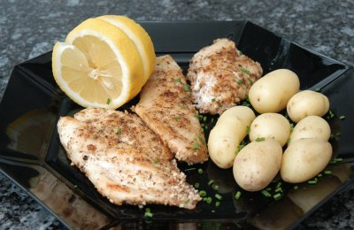

| Zutaten für 4 Personen: | |
| 600 g | Kartoffeln |
| Salz | |
| 600 g | Eglifilets |
| Fisch- Würzmischung | |
| 2 El | Brat- Butter |
| 1 Bund | Petersilie |
| 4 El | Mandelblättchen |
| 40 g | Kochbutter |
| 1 | Zitrone |
Kartoffeln schälen und würfeln. In Salzwasser kochen.
Eglifilets würzen und auf der fleischigen Seite in der erhitzten Brat- Butter braten.
Die Hälfte der Petersilie hacken.
Die Mandelblättchen in der erwärmten Kochbutter rösten.
Kartoffeln mit gehackter Petersilie bestreuen. Eglifilets mit den Buttermandeln überziehen, mit Petersilie und Zitronenrondellen garnieren.
Migros Rezepte vom Küchenchef
Hat am 10.3.2008 ausgezeichnet geschmeckt. OK, der geneigte Leser wird natürlich erkennen, dass es sich um einen Neuseeländischen Petersfisch handelt da es keine Eglifilets in der Migros gab. Auch fand ich keine Mandelblättchen weshalb es geriebene Mandeln dazu gab. Und die Petersilie ersetzte ich durch Schnittlauch da die Petersilie im Balkonkistchen noch Wachstumshemmungen hat. Trotz dieser Änderungen gab das ein sehr schmackhaftes Mahl! RE
@LINKBACK_TAG@ @WAKELOCK@